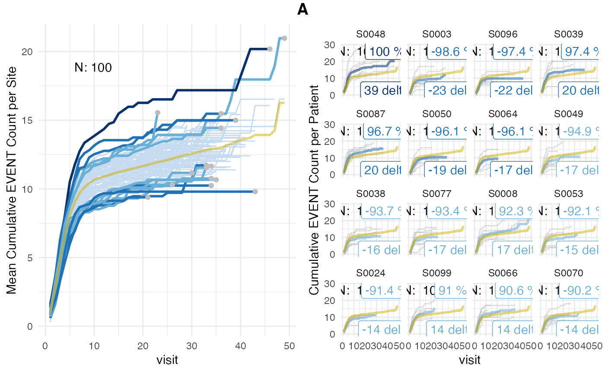
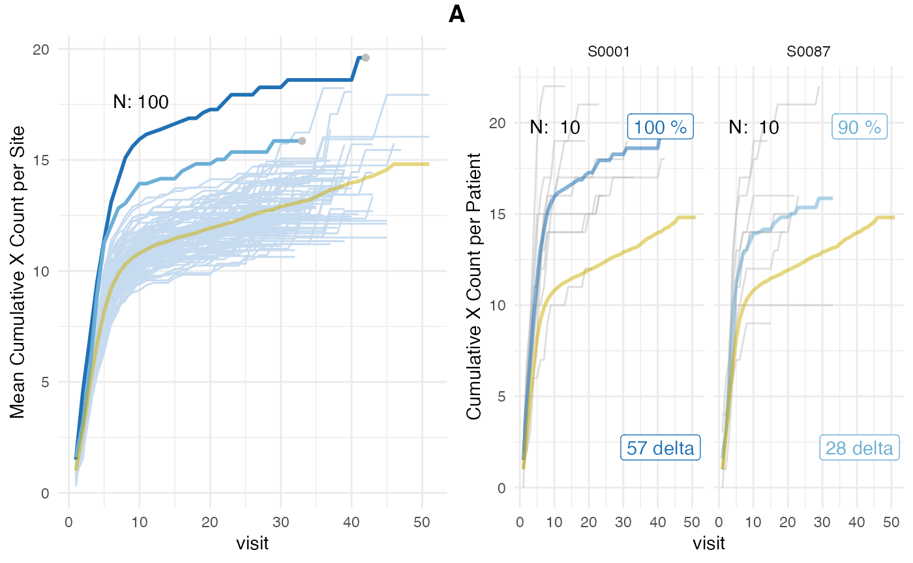
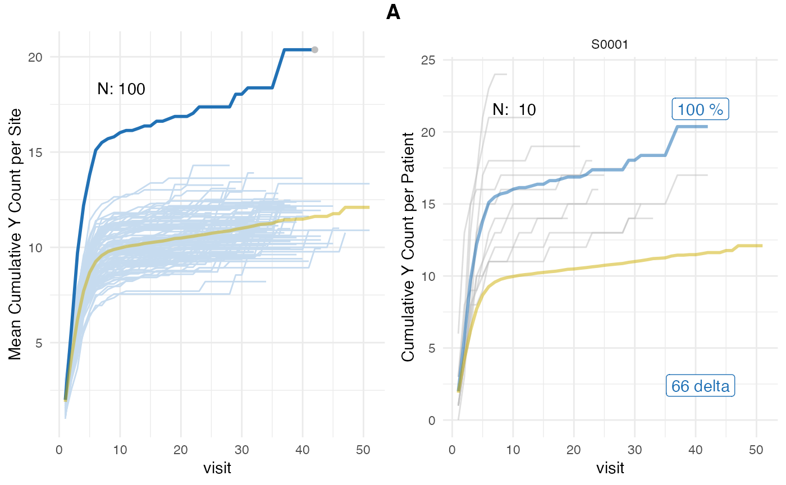

Introduction
Simulate subject-level event reporting of clinical trial sites with the goal of detecting over- and under-reporting.
Monitoring reporting rates of subject-level clinical events (e.g. adverse events, protocol deviations) reported by clinical trial sites is an important aspect of risk-based quality monitoring (RBQM) strategy. Sites that are under-reporting or over-reporting events can be detected using bootstrap simulations during which patients are redistributed between sites. Site-specific distributions of event reporting rates are generated that are used to assign probabilities to the observed reporting rates.
The method is inspired by the ‘infer’ R package and Allen Downey’s blog article: “There is only one test!”.
Why use {simaerep}?
Patient-level events during a clinical study do not occur randomly at visits but they are heavily dependent on the underlying study protocol and the planned procedures. We have illustrated this in our simulated test data by sampling event rates from a gamma distribution with higher rates for early visits and low rates for late visits.
Typically most RBQM tools calculate a ratio between the site event count and the number of patient, the days that they spend on study or the number of visits. Then they employ some outlier detection method to detect outliers (e.g. box plot statistics, percentiles, funnel plots). All of these methods assume a constant event rate over the course of the study or that all patients started the trial at the same time.
In a simulation experiments we could show that {simaerep} outperforms these methods see documentation.
{simaerep} has also been positively evaluated by three different industry members for the purpose of detecting sites that are under-reporting adverse events Koneswarakantha et al. 2024.
Algorithm
- Record initial site-level events per visits rate
- Replace every patient with a random patient with the same number of visits
- Record site-level events per visits rate for new set of patients
- Repeat 3) 1000 times to obtain site-specific events per visits rate distribution.
- Determine probability to obtain initial site-level events per visits rate from 1) using the distribution generated in 4)
- Adjust probabilities using the Benjamin Hochberg Procedure in order to correct alpha error.
Sample Data
Patient
Patient level AE data is characterized by the number of consecutive visits and the number of AEs that have been reported each time. For the maximum consecutive visit we sample from a normal distribution and for the AEs reported at each visit we sample from a poisson distribution.
Here we simulate the AEs generated by 3 patients
set.seed(1)
replicate(
3,
sim_test_data_patient(
.f_sample_max_visit = function() rnorm(1, mean = 20, sd = 4),
.f_sample_event_per_visit = function(max_visit) rpois(max_visit, 0.5)
)
)## [[1]]
## [1] 0 1 1 2 4 5 6 6 6 6 7 7 8 8 9 12 12
##
## [[2]]
## [1] 0 1 1 1 1 1 1 2 2 2 2 2 2 3 4 5 5 6 6 7 8 9 9
##
## [[3]]
## [1] 0 0 1 2 2 3 3 3 3 3 3 3 4 4 6 6 6 6 7 7Study
In order to simulate patient data for an entire study we assume make the simplification that all sites have the same number of patients. Further we specify a fraction of sites that is under-reporting events.
We sample event_rates from a gamma distribution to reflect the non-constant event rates.
set.seed(1)
df_visit <- sim_test_data_study(
n_pat = 100, # number of patients in study
n_sites = 10, # number of sites in study
ratio_out = 0.1, # ratio of sites with outlier
factor_event_rate = -0.5, # rate of under-reporting
# non-constant event rates based on gamma distribution
event_rates = (dgamma(seq(1, 20, 0.5), shape = 5, rate = 2) * 5) + 0.1,
max_visit = 20,
max_visit_sd = 10,
study_id = "A"
)
df_visit %>%
head(10) %>%
knitr::kable()| patient_id | site_id | is_out | max_visit_mean | max_visit_sd | event_per_visit_mean | visit | n_event | study_id |
|---|---|---|---|---|---|---|---|---|
| P000001 | S0001 | TRUE | 20 | 10 | 0.1762578 | 1 | 0 | A |
| P000001 | S0001 | TRUE | 20 | 10 | 0.1762578 | 2 | 2 | A |
| P000001 | S0001 | TRUE | 20 | 10 | 0.1762578 | 3 | 2 | A |
| P000001 | S0001 | TRUE | 20 | 10 | 0.1762578 | 4 | 4 | A |
| P000001 | S0001 | TRUE | 20 | 10 | 0.1762578 | 5 | 6 | A |
| P000001 | S0001 | TRUE | 20 | 10 | 0.1762578 | 6 | 7 | A |
| P000001 | S0001 | TRUE | 20 | 10 | 0.1762578 | 7 | 7 | A |
| P000001 | S0001 | TRUE | 20 | 10 | 0.1762578 | 8 | 7 | A |
| P000001 | S0001 | TRUE | 20 | 10 | 0.1762578 | 9 | 7 | A |
| P000001 | S0001 | TRUE | 20 | 10 | 0.1762578 | 10 | 7 | A |
| site_id | is_out |
|---|---|
| S0001 | TRUE |
| S0002 | FALSE |
| S0003 | FALSE |
| S0004 | FALSE |
| S0005 | FALSE |
| S0006 | FALSE |
| S0007 | FALSE |
| S0008 | FALSE |
| S0009 | FALSE |
| S0010 | FALSE |
In our sample data 1 sites (S0001) is under-reporting events.
Algorithm Execution
Standard
The column event_prob contains the reporting probability
for each site as values between -1 and 1. Under- and over-reporting
probabilities are inversely related and have been combined into one
column. Negative values show high under-reporting, positive values
higher over-reporting.
The column event_delta shows the difference of events
expected minus the events reported.
evrep <- simaerep(df_visit)
evrep## simaerep object:
## ----------------
## Plot results using plot() generic.
## Full results available in "df_eval".
##
## Summary:
## Number of sites: 10
## Number of studies: 1
##
## Multiplicity correction applied to "*_prob" columns.
##
## First 10 rows of df_eval:
## # A tibble: 10 × 9
## study_id site_id event_count event_per_visit_site visits n_pat
## <chr> <chr> <dbl> <dbl> <dbl> <int>
## 1 A S0001 67 0.390 172 10
## 2 A S0002 97 0.740 131 10
## 3 A S0003 122 0.587 208 10
## 4 A S0004 108 0.6 180 10
## 5 A S0005 121 0.5 242 10
## 6 A S0006 101 0.470 215 10
## 7 A S0007 103 0.545 189 10
## 8 A S0008 105 0.559 188 10
## 9 A S0009 119 0.601 198 10
## 10 A S0010 99 0.471 210 10
## # ℹ 3 more variables: event_per_visit_study <dbl>, event_prob <dbl>,
## # event_delta <dbl>
plot(evrep, study = "A")
Left panel shows mean cumulative event reporting per site (blue lines) against mean cumulative event reporting of the entire study (golden line). Sites with either high under-reporting (negative probabilities) or high over-reporting (positive probabilities) are marked by grey dots and plotted in additional panels on the right. N denotes the number of sites. Right panel shows individual sites with total patient cumulative counts as grey lines. N denotes the number of patients, the percentage the under- and over-reporting probability and 394 denotes the difference compared to the expected number of events.
Illustrate Probability Scoring
We can illustrate the probability scoring by increasing the number of sites and switching off the multiplicity correction and not introducing any outlier.
Note that none of these sites are actually outlier but high scores are the results of repetitive testing.
df_visit <- sim_test_data_study(
n_pat = 1000, # number of patients in study
n_sites = 100, # number of sites in study
# non-constant event rates based on gamma distribution
event_rates = (dgamma(seq(1, 20, 0.5), shape = 5, rate = 2) * 5) + 0.1,
max_visit = 20,
max_visit_sd = 10,
study_id = "A"
)
evrep <- simaerep(df_visit, mult_corr = FALSE)
evrep## simaerep object:
## ----------------
## Plot results using plot() generic.
## Full results available in "df_eval".
##
## Summary:
## Number of sites: 100
## Number of studies: 1
##
## First 10 rows of df_eval:
## # A tibble: 10 × 9
## study_id site_id event_count event_per_visit_site visits n_pat
## <chr> <chr> <dbl> <dbl> <dbl> <int>
## 1 A S0001 95 0.426 223 10
## 2 A S0002 116 0.547 212 10
## 3 A S0003 97 0.424 229 10
## 4 A S0004 110 0.509 216 10
## 5 A S0005 109 0.623 175 10
## 6 A S0006 115 0.5 230 10
## 7 A S0007 103 0.518 199 10
## 8 A S0008 133 0.522 255 10
## 9 A S0009 125 0.710 176 10
## 10 A S0010 107 0.457 234 10
## # ℹ 3 more variables: event_per_visit_study <dbl>, event_prob <dbl>,
## # event_delta <dbl>
plot(evrep, study = "A")
Multiple Event Types
We can calculate scores for multiple event types in one go. This time we add a site outlier with 50% over-reporting.
set.seed(1)
event_names <- c("x", "y")
df_visit <- sim_test_data_study(
n_pat = 1000, # number of patients in study
n_sites = 100, # number of sites in study
# non-constant event rates based on gamma distribution
ratio_out = 1/100, # ratio of sites with outlier
factor_event_rate = +0.5, # rate of over-reporting
event_names = event_names,
event_rates = list(
(dgamma(seq(1, 20, 0.5), shape = 5, rate = 2) * 5) + 0.1,
(dgamma(seq(1, 20, 0.5), shape = 4, rate = 2) * 5) + 0.05
),
max_visit = 20,
max_visit_sd = 10,
study_id = "A"
)
df_visit %>%
select(site_id, patient_id, visit, n_x, n_y)## # A tibble: 19,535 × 5
## site_id patient_id visit n_x n_y
## <chr> <chr> <int> <dbl> <dbl>
## 1 S0001 P000001 1 2 3
## 2 S0001 P000001 2 7 7
## 3 S0001 P000001 3 9 15
## 4 S0001 P000001 4 14 17
## 5 S0001 P000001 5 19 19
## 6 S0001 P000001 6 21 21
## 7 S0001 P000001 7 22 21
## 8 S0001 P000001 8 22 21
## 9 S0001 P000001 9 22 21
## 10 S0001 P000001 10 22 21
## # ℹ 19,525 more rows
evrep <- simaerep(df_visit, event_names = event_names)
evrep## simaerep object:
## ----------------
## Plot results using plot() generic.
## Full results available in "df_eval".
##
## Summary:
## Number of sites: 100
## Number of studies: 1
##
## Multiplicity correction applied to "*_prob" columns.
##
## Reporting probabilities calculated for: x, y
##
## First 10 rows of df_eval:
## # A tibble: 10 × 14
## study_id site_id x_count y_count x_per_visit_site y_per_visit_site visits
## <chr> <chr> <dbl> <dbl> <dbl> <dbl> <dbl>
## 1 A S0001 177 175 0.738 0.729 240
## 2 A S0002 120 99 0.632 0.521 190
## 3 A S0003 111 89 0.624 0.5 178
## 4 A S0004 107 105 0.540 0.530 198
## 5 A S0005 97 83 0.551 0.472 176
## 6 A S0006 111 97 0.531 0.464 209
## 7 A S0007 110 106 0.466 0.449 236
## 8 A S0008 119 116 0.482 0.470 247
## 9 A S0009 121 103 0.680 0.579 178
## 10 A S0010 92 82 0.561 0.5 164
## # ℹ 7 more variables: n_pat <int>, x_per_visit_study <dbl>,
## # y_per_visit_study <dbl>, x_prob <dbl>, x_delta <dbl>, y_prob <dbl>,
## # y_delta <dbl>
plot(evrep, study = "A", plot_event = "x")
plot(evrep, study = "A", plot_event = "y")
Input Data Requirements
As input data the cumulative event count for each patient visit is required.
df_visit <- sim_test_data_study()
df_visit %>%
filter(patient_id == "P000001") %>%
select(site_id, patient_id, visit, n_event) %>%
knitr::kable()| site_id | patient_id | visit | n_event |
|---|---|---|---|
| S0001 | P000001 | 1 | 2 |
| S0001 | P000001 | 2 | 3 |
| S0001 | P000001 | 3 | 5 |
| S0001 | P000001 | 4 | 5 |
| S0001 | P000001 | 5 | 6 |
| S0001 | P000001 | 6 | 8 |
| S0001 | P000001 | 7 | 9 |
| S0001 | P000001 | 8 | 10 |
| S0001 | P000001 | 9 | 11 |
| S0001 | P000001 | 10 | 11 |
| S0001 | P000001 | 11 | 11 |
| S0001 | P000001 | 12 | 12 |
| S0001 | P000001 | 13 | 12 |
| S0001 | P000001 | 14 | 12 |
| S0001 | P000001 | 15 | 12 |
In practice this requires data from different domains within the clinical data set to be merged. This requires the patient and site ids as well as the date and time at which visits and events are occurring.
There will be edge cases e.g. missing dates, missing patient link, events and visits on the same date, that require attention.
gsm.simaerep::InputCumCount
that is part of the gsm extension gsm.simaerep
uses subject, visit and event data as input and merges the data into a
simaerep ready data frame.
However, it follows the gsm naming conventions so the
column names will be different than those required by
simaerep. We can adapt to the different column names in the
following way.
gsm.simaerep has not yet been released on CRAN so we are
not demonstrating it’s functionality here.
df_visit_gsm <- df_visit %>%
mutate(
study_id = "A"
) %>%
select(
StudyID = study_id,
GroupID = site_id,
SubjectID = patient_id,
Denominator = visit,
Numerator = n_event
)
simaerep(
df_visit_gsm,
col_names = list(
study_id = "StudyID",
site_id = "GroupID",
patient_id = "SubjectID",
visit = "Denominator",
n_ae = "Numerator"
)
)## simaerep object:
## ----------------
## Plot results using plot() generic.
## Full results available in "df_eval".
##
## Summary:
## Number of sites: 20
## Number of studies: 1
##
## Multiplicity correction applied to "*_prob" columns.
##
## First 10 rows of df_eval:
## # A tibble: 10 × 9
## StudyID GroupID ae_count ae_per_visit_site visits n_pat ae_per_visit_study
## <chr> <chr> <dbl> <dbl> <dbl> <int> <dbl>
## 1 A S0001 511 0.512 998 50 0.502
## 2 A S0002 501 0.504 994 50 0.502
## 3 A S0003 513 0.515 996 50 0.504
## 4 A S0004 501 0.521 962 50 0.501
## 5 A S0005 476 0.504 945 50 0.503
## 6 A S0006 477 0.479 995 50 0.503
## 7 A S0007 520 0.513 1013 50 0.506
## 8 A S0008 538 0.531 1014 50 0.502
## 9 A S0009 447 0.468 956 50 0.503
## 10 A S0010 451 0.459 982 50 0.504
## # ℹ 2 more variables: ae_prob <dbl>, ae_delta <dbl>Multiple Studies
simaerep probabilities can be calculated for multiple
studies at once.
df_visit <- bind_rows(
sim_test_data_study(study_id = "A"),
sim_test_data_study(study_id = "B")
)
simaerep(df_visit)## simaerep object:
## ----------------
## Plot results using plot() generic.
## Full results available in "df_eval".
##
## Summary:
## Number of sites: 40
## Number of studies: 2
##
## Multiplicity correction applied to "*_prob" columns.
##
## First 10 rows of df_eval:
## # A tibble: 10 × 9
## study_id site_id event_count event_per_visit_site visits n_pat
## <chr> <chr> <dbl> <dbl> <dbl> <int>
## 1 A S0001 494 0.496 995 50
## 2 A S0002 480 0.503 955 50
## 3 A S0003 491 0.490 1003 50
## 4 A S0004 524 0.514 1019 50
## 5 A S0005 479 0.506 947 50
## 6 A S0006 511 0.532 960 50
## 7 A S0007 492 0.512 961 50
## 8 A S0008 499 0.519 961 50
## 9 A S0009 499 0.519 962 50
## 10 A S0010 498 0.515 967 50
## # ℹ 3 more variables: event_per_visit_study <dbl>, event_prob <dbl>,
## # event_delta <dbl>In Database Calculation
We can demonstrate the database-backend compatibility by using a
connection to a in memory duckdb database. In order to set
the number of replications we need to create a new table in our back-end
that has one column with as many rows as the desired replications.
A lazy reference to this table can then be passed to the
r parameter.
con <- DBI::dbConnect(duckdb::duckdb(), dbdir = ":memory:")
df_r <- tibble(rep = seq(1, 1000))
df_visit <- sim_test_data_study(
n_pat = 100, # number of patients in study
n_sites = 10, # number of sites in study
ratio_out = 0.1, # ratio of sites with outlier
factor_event_rate = -0.5, # rate of under-reporting
# non-constant event rates based on gamma distribution
event_rates = (dgamma(seq(1, 20, 0.5), shape = 5, rate = 2) * 5) + 0.1,
max_visit = 20,
max_visit_sd = 10,
study_id = "A"
)
dplyr::copy_to(con, df_visit, "visit")
dplyr::copy_to(con, df_r, "r")
tbl_visit <- tbl(con, "visit")
tbl_r <- tbl(con, "r")
evrep_db <- simaerep(tbl_visit, r = tbl_r)When inspecting df_eval we see that it is still a lazy
table object.
evrep_db## simaerep object:
## ----------------
## Plot results using plot() generic.
## Full results available in "df_eval".
##
## Summary:
## Multiplicity correction applied to "*_prob" columns.
##
## First 10 rows of df_eval:
## # Source: SQL [?? x 9]
## # Database: DuckDB v1.3.0 [koneswab@Darwin 23.6.0:R 4.4.1/:memory:]
## # Ordered by: study_id, site_id
## study_id site_id event_count event_per_visit_site visits n_pat
## <chr> <chr> <dbl> <dbl> <dbl> <dbl>
## 1 A S0006 119 0.463 257 10
## 2 A S0007 122 0.552 221 10
## 3 A S0004 116 0.483 240 10
## 4 A S0001 61 0.302 202 10
## 5 A S0003 125 0.595 210 10
## 6 A S0002 105 0.544 193 10
## 7 A S0009 123 0.530 232 10
## 8 A S0008 103 0.462 223 10
## 9 A S0010 107 0.480 223 10
## 10 A S0005 96 0.381 252 10
## # ℹ 3 more variables: event_per_visit_study <dbl>, event_prob <dbl>,
## # event_delta <dbl>We can convert it to sql code. The cte option makes the
sql code more readable.
sql_eval <- dbplyr::sql_render(evrep_db$df_eval, sql_options = dbplyr::sql_options(cte = TRUE))
stringr::str_trunc(sql_eval, 500)## <SQL> WITH q01 AS (
## SELECT
## patient_id AS patnum,
## site_id AS site_number,
## is_out,
## max_visit_mean,
## max_visit_sd,
## event_per_visit_mean,
## visit,
## n_event,
## study_id
## FROM visit
## ),
## q02 AS (
## SELECT
## patnum,
## site_number,
## is_out,
## max_visit_mean,
## max_visit_sd,
## event_per_visit_mean,
## CAST(visit AS NUMERIC) AS visit,
## CAST(n_event AS NUMERIC) AS n_event,
## study_id
## FROM q01
## ),
## q03 AS (
## SELECT DISTINCT study_id, site_number
## FROM q02 q01...We can take that code and wrap it in a CREATE TABLE
statement
## [1] 10Retrieve the new table from the database.
tbl_eval <- tbl(con, "eval")
tbl_eval## # Source: table<eval> [?? x 9]
## # Database: DuckDB v1.3.0 [koneswab@Darwin 23.6.0:R 4.4.1/:memory:]
## study_id site_id event_count event_per_visit_site visits n_pat
## <chr> <chr> <dbl> <dbl> <dbl> <dbl>
## 1 A S0003 125 0.595 210 10
## 2 A S0005 96 0.381 252 10
## 3 A S0001 61 0.302 202 10
## 4 A S0009 123 0.530 232 10
## 5 A S0008 103 0.462 223 10
## 6 A S0004 116 0.483 240 10
## 7 A S0010 107 0.480 223 10
## 8 A S0006 119 0.463 257 10
## 9 A S0002 105 0.544 193 10
## 10 A S0007 122 0.552 221 10
## # ℹ 3 more variables: event_per_visit_study <dbl>, event_prob <dbl>,
## # event_delta <dbl>We plot the results from the {simaerep} object.
plot(evrep_db, study = "A")
DBI::dbDisconnect(con)